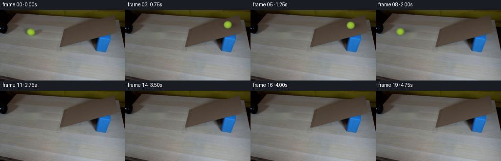
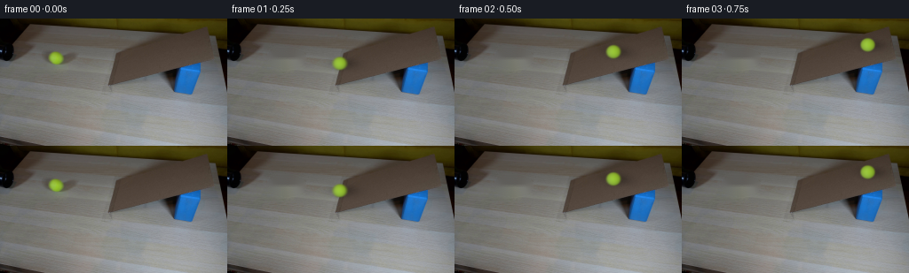

CODING AGENTS AS PIXEL WORLD MODELS
traex/GPT-6.1-Sol · 0021
点击播放 · 原生 RGB 像素
逐轮保存的候选
回放视频、检查图与代码变化。
每份候选均可单独播放。实际图片检查记录在下方工具轨迹中。
候选 01播放与检查图
点击播放 · 原生 RGB 像素


展开代码变化
--- 上一保存版本
+++ 本次保存版本
@@ -0,0 +1,141 @@
+from pathlib import Path
+import numpy as np
+from PIL import Image
+import cv2
+from scipy.ndimage import gaussian_filter
+import artifact_io
+
+ROOT = Path(__file__).resolve().parent
+W, H = 256, 144
+
+
+def make_background(first):
+ yy, xx = np.mgrid[:H, :W]
+ # Restore only the small part of the tabletop hidden by the original ball,
+ # its diffuse cast shadow, and the faint yellow reflection.
+ hole = (((xx-66.0)/22.8)**2 + ((yy-44.7)/12.6)**2 < 1)
+ bg = cv2.inpaint(first, hole.astype(np.uint8)*255, 4, cv2.INPAINT_TELEA)
+ return bg.astype(np.float64)
+
+
+# Projected motion of a rolling hollow ball, on a level surface and then an
+# inclined plane. The opposing acceleration on the incline includes rotational
+# inertia. No edits, camera motion, or changes to the demonstration apparatus.
+X0, Y0 = 62.80935, 44.63075
+EDGE = 126.5
+V0, FRICTION, GRAVITY_RAMP = 255., 9., 350.
+T_ENTRY = (V0-np.sqrt(V0*V0-2*FRICTION*(EDGE-X0)))/FRICTION
+V_ENTRY = V0-FRICTION*T_ENTRY
+T_EXIT = T_ENTRY+2*V_ENTRY/GRAVITY_RAMP
+Y_EDGE = Y0 + .091*(EDGE-X0)
+
+
+def state(t):
+ if t < T_ENTRY:
+ x = X0+V0*t-.5*FRICTION*t*t
+ speed = V0-FRICTION*t
+ y = Y0+.091*(x-X0)
+ distance = (x-X0)*np.sqrt(1+.091**2)
+ slope = .091
+ elif t <= T_EXIT:
+ dt = t-T_ENTRY
+ s = V_ENTRY*dt-.5*GRAVITY_RAMP*dt*dt
+ x = EDGE+s
+ y = Y_EDGE-.256*s
+ speed = V_ENTRY-GRAVITY_RAMP*dt
+ distance = (EDGE-X0)*np.sqrt(1+.091**2) + s*np.sqrt(1+.256**2)
+ slope = -.256
+ else:
+ dt = t-T_EXIT
+ s = -V_ENTRY*dt+.5*FRICTION*dt*dt
+ x = EDGE+s
+ y = Y_EDGE+.091*s
+ speed = -V_ENTRY+FRICTION*dt
+ distance = (EDGE-X0+s)*np.sqrt(1+.091**2)
+ slope = .091
+ return x, y, distance, slope
+
+
+def ball_layer(background, time):
+ x, y, distance, slope = state(time)
+ if x < -17 or x > W+17:
+ return background.copy()
+ result = background.copy()
+ # Work at 4x resolution inside a local patch, keeping the original pixels
+ # of the locked camera untouched everywhere else.
+ lo_x, hi_x = max(0, int(np.floor(x-29))), min(W, int(np.ceil(x+31)))
+ lo_y, hi_y = max(0, int(np.floor(y-20))), min(H, int(np.ceil(y+21)))
+ if hi_x <= lo_x or hi_y <= lo_y:
+ return result
+ S = 4
+ xx = lo_x + (np.arange((hi_x-lo_x)*S)+.5)/S-.5
+ yy = lo_y + (np.arange((hi_y-lo_y)*S)+.5)/S-.5
+ X,Y = np.meshgrid(xx,yy)
+ radius_x = 7.85*(1+.00022*(x-X0))
+ radius_y = 7.30*(1+.00022*(x-X0))
+ u, v = (X-x)/radius_x, (Y-y)/radius_y
+ r2 = u*u+v*v
+ z = np.sqrt(np.maximum(0,1-r2))
+
+ # A soft cast shadow extends behind and to the right, like the source's
+ # shadow; the small contact component anchors the sphere to the cardboard.
+ sx = X-x-5.0
+ sy = Y-y-.0 + slope*sx*.42
+ diffuse = .27*np.exp(-.5*((sx/11.0)**2+(sy/4.0)**2))
+ contact = .11*np.exp(-.5*(((X-x-.5)/5.8)**2+((Y-y-radius_y*.82)/1.4)**2))
+ shadow = np.clip(diffuse+contact,0,.38)
+ shadow = shadow.reshape(hi_y-lo_y,S,hi_x-lo_x,S).mean((1,3))
+ patch = background[lo_y:hi_y,lo_x:hi_x]*(1-shadow[...,None])
+
+ # Image-matched diffuse sphere with a fine felt surface. The unobtrusive
+ # cream seam is parameterized on the sphere, and rotates with true travel
+ # distance rather than sliding across its screen-space silhouette.
+ rgb = (np.array([95.85,116.17,39.37])
+ +z[...,None]*np.array([56.78,81.83,14.46])
+ +u[...,None]*np.array([-8.32,-8.81,-11.92])
+ +v[...,None]*np.array([-3.05,-1.98,5.04]))
+ theta = distance/7.85
+ axis = np.array([-.12,.99,.07]); axis /= np.linalg.norm(axis)
+ q = np.stack([u,v,z],axis=-1)
+ # inverse Rodrigues rotation to sample a seam fixed to the ball's skin
+ ct,st = np.cos(theta),np.sin(theta)
+ qr = q*ct-np.cross(axis,q)*st+np.sum(q*axis,axis=-1)[...,None]*axis*(1-ct)
+ seam_distance = qr[...,0]+.40*(qr[...,2]**2-qr[...,1]**2)
+ seam = np.exp(-.5*(seam_distance/.067)**2)
+ rgb += seam[...,None]*np.array([3.,1.0,15.5])
+ grain = (np.sin(91*qr[...,0]+67*qr[...,1]+48*qr[...,2])
+ *np.sin(51*qr[...,0]-108*qr[...,1]+93*qr[...,2]))
+ rgb += grain[...,None]*1.6
+ alpha = (r2 <= 1).astype(float)
+ # The photograph's focus gives the felt outline a modest, constant softness.
+ alpha = gaussian_filter(alpha,.58*S)
+ premult = gaussian_filter(rgb*(r2<=1)[...,None],(.58*S,.58*S,0))
+ alpha = alpha.reshape(hi_y-lo_y,S,hi_x-lo_x,S).mean((1,3))
+ premult = premult.reshape(hi_y-lo_y,S,hi_x-lo_x,S,3).mean((1,3))
+ patch = patch*(1-alpha[...,None])+premult
+ result[lo_y:hi_y,lo_x:hi_x] = patch
+ return result
+
+
+def generate():
+ first = np.asarray(Image.open(ROOT/'first_frame.png').convert('RGB'))
+ bg = make_background(first)
+ (ROOT/'.tmp').mkdir(exist_ok=True)
+ Image.fromarray(np.clip(bg,0,255).astype(np.uint8)).save(ROOT/'.tmp'/'table_restored.png')
+ frames = [first.copy()]
+ yy,xx = np.mgrid[:H,:W]
+ # The mouth of the black pipe is foreground at the extreme left.
+ pipe = (xx<19)&(yy<47)&(first.mean(axis=2)<34)
+ for i in range(1,20):
+ t = i/4
+ # Short photographic exposure, not a slowed-down interpolation.
+ samples = [ball_layer(bg,t+dt) for dt in np.linspace(-.006,.006,5)]
+ image = np.mean(samples,axis=0)
+ image[pipe] = first[pipe]
+ frames.append(np.clip(np.rint(image),0,255).astype(np.uint8))
+ frames = np.stack(frames)
+ artifact_io.save(frames,ROOT)
+ return frames
+
+if __name__ == '__main__':
+ generate()
可观测工具轨迹
实际执行的命令与返回图片。
命令 1exit 0
/bin/bash -lc 'ls -la && cat prompt.txt && cat GENERATION_RULES.md'
命令 2exit 0
/bin/bash -lc "cat artifact_io.py && python - <<'PY'
from PIL import Image
import numpy as np
im=np.array(Image.open('first_frame.png'));print(im.shape)
# median patches to categorize colors
for y in range(0,144,4):
s=''
for x in range(0,256,4):
r,g,b=np.median(im[y:y+4,x:x+4],axis=(0,1))
if max(r,g,b)<55:c='K'
elif b>r*1.25 and b>g*1.05:c='B'
elif r>100 and g>100 and b<g*.65:c='Y'
elif max(r,g,b)-min(r,g,b)<15:c='.' if r>190 else '-' if r>130 else 'k'
elif r>g*1.2 and g>b*1.25:c='c'
elif r>g and g>b:c='w'
else:c='?'
s+=c
print(f'{y:03d} {s}')
PY"命令 3exit 0
/bin/bash -lc "python - <<'PY'
import numpy as np
from PIL import Image
im=np.asarray(Image.open('first_frame.png'));print('range',im.min(axis=(0,1)),im.max(axis=(0,1)))
for y in range(0,144,8):
print(y, [(x,tuple(im[y,x])) for x in range(0,256,16)])
print('ASCII LUMA:')
g=(im@[.2126,.7152,.0722]).reshape(72,2,128,2).mean((1,3)); chars=' .,:;irsXA253hMHGS#9B&@'
for row in g:
print(''.join(chars[min(len(chars)-1,int(a/256*len(chars)))] for a in row))
PY"命令 4exit 0
/bin/bash -lc "python - <<'PY'
from PIL import Image
import numpy as np
im=np.array(Image.open('first_frame.png')).astype(float)
for y in range(0,90,2):
s=''
for x in range(0,256,2):
r,g,b=im[y:y+2,x:x+2].mean((0,1));L=(r+g+b)/3
if g>r*1.12 and g>b*1.8 and g>100:c='O'
elif b>r*1.5 and b>g*1.2:c='B'
elif L<25:c='@'
elif r-b>25 and g-b>20:c='z'
elif r-b>17 and r-g>7:c='C'
elif r-b>8 and r-g>4:c='c'
elif L<50:c='#'
elif L<70:c='x'
elif L<90:c='-'
elif L<110:c='.'
else:c=' '
s+=c
print(f'{y:02d} {s}')
PY"命令 5exit 0
/bin/bash -lc "python - <<'PY'
import numpy as np
from PIL import Image
im=np.array(Image.open('first_frame.png')).astype(float)
# detailed profiles for ramp transition
for y in [12,16,20,24,28,32,36,40,44,48,52,56,60,64,68,72,76]:
print('\\ny=',y)
print(' '.join(f'{x}:{im[y,x].astype(int).tolist()}' for x in range(110,247,5)))
# ball exact colors
m=(im[:,:,1]>im[:,:,0]*1.15)&(im[:,:,1]>im[:,:,2]*1.8)&(im[:,:,1]>125)
y,x=np.where(m);print('\\nBall bounds',x.min(),x.max(),y.min(),y.max(),'color',im[m].mean(0))
PY"命令 6exit 0
/bin/bash -lc "python - <<'PY'
import cv2,numpy as np
from PIL import Image
im=np.array(Image.open('first_frame.png')).astype(int)
r,g,b=im.transpose(2,0,1)
m=((r-g>9)&(g-b>6)&(r-b<29)&(r>60)&(np.indices(r.shape)[1]>118)&(np.indices(r.shape)[0]<79)).astype('uint8')
n,l,s,c=cv2.connectedComponentsWithStats(m)
k=1+np.argmax(s[1:,4]);mask=l==k
for y in range(7,76,2):
x=np.where(mask[y])[0]; print(y, (x.min(),x.max()) if len(x) else [])
# Ball ascii region 48..80 x32..58 displayed colors green ratio
for y in range(32,60):
print('%02d '%y+''.join('O' if g[y,x]>r[y,x]*1.15 and g[y,x]>b[y,x]*1.8 else 'y' if g[y,x]>r[y,x]*1.1 and g[y,x]>b[y,x]*1.4 else 's' if max(im[y,x])-min(im[y,x])<22 and g[y,x]<90 else '.' for x in range(44,86)))
PY"命令 7exit 0
/bin/bash -lc "python - <<'PY'
import numpy as np
from PIL import Image
im=np.array(Image.open('first_frame.png'))
for y in range(35,55):
print(y,' '.join(f'{x}:{tuple(im[y,x])}' for x in range(51,74)))
PY"命令 8exit 0
/bin/bash -lc "python - <<'PY'
import numpy as np
from PIL import Image
from scipy.ndimage import gaussian_filter
im=np.array(Image.open('first_frame.png')).astype(float); cx,cy,rx,ry=62.6,44.4,8.2,7.5
Y,X=np.indices(im.shape[:2]);u=(X-cx)/rx;v=(Y-cy)/ry;rad=u*u+v*v;z=np.sqrt(np.maximum(0,1-rad));mask=rad<.64
M=np.stack([np.ones_like(z),z,u,v,u*u,v*v,u*v],axis=-1)
a=np.linalg.lstsq(M[mask],im[mask],rcond=None)[0];print(a)
f=M@a;print('rmse',np.sqrt(((f[mask]-im[mask])**2).mean(0)))
for p in [(0,0),(-.5,0),(.5,0),(0,-.5),(0,.5),(-.8,0),(.8,0),(0,-.8),(0,.8)]:
u,v=p;z=np.sqrt(1-u*u-v*v);print(p,np.round(np.array([1,z,u,v,u*u,v*v,u*v])@a,1))
PY"命令 9exit 0
/bin/bash -lc "python - <<'PY'
from PIL import Image
import numpy as np
im=np.array(Image.open('first_frame.png'))
for y in range(32,59,2):
print(y,' '.join(f'{x}='+','.join(str(v) for v in im[y,x]) for x in range(30,122,4)))
PY"命令 10exit 0
/bin/bash -lc "python - <<'PY'
from PIL import Image
import numpy as np
from scipy.optimize import least_squares
im=np.array(Image.open('first_frame.png')).astype(float)
y,x=np.indices(im.shape[:2]);sel=(x>=48)&(x<=80)&(y>=32)&(y<=58)
X=x[sel];Y=y[sel];I=im[sel]
# foreground sphere + background plane approximate fit; limited ball range
bg=np.empty_like(im)
for j in range(144):
for c in range(3):
bg[j,:,c]=np.interp(np.arange(256),[45,89],[im[j,45,c],im[j,89,c]])
# only spherical center parameter guesses solve color coverage in G-R (background ~0)
from scipy.special import expit
col=(im[:,:,1]-im[:,:,0])[sel]
def residual(p):
cx,cy,rx,ry,s,a=p
d=((X-cx)/rx)**2+((Y-cy)/ry)**2
return a*expit((1-d)/s)-col
res=least_squares(residual,[62.6,44.4,8.1,7.7,.21,44],bounds=([60,42,6,6,.02,20],[65,47,10,10,1,65]))
print(res.x,np.sqrt((res.fun**2).mean()))
PY"命令 11exit 0
/bin/bash -lc "python - <<'PY'
import cv2,numpy as np
from PIL import Image
from scipy.ndimage import gaussian_filter
im=np.array(Image.open('first_frame.png')).astype(float)
y,x=np.indices(im.shape[:2]);mask=(((x-66)/19)**2+((y-44.5)/10)**2<1).astype(np.uint8)
bg=cv2.inpaint(im.astype(np.uint8),mask*255,4,cv2.INPAINT_TELEA).astype(float)
Image.fromarray(bg.astype(np.uint8)).save('.tmp/clean_candidate.png')
cx,cy,rx,ry=62.81,44.63,7.85,7.3
u=(x-cx)/rx;v=(y-cy)/ry;d=np.sqrt(u*u+v*v);z=np.sqrt(np.maximum(0,1-d*d))
alpha=gaussian_filter((d<1).astype(float),.7)
# true target composited shading . diff=alpha*(fg-bg)
M=np.stack([np.ones_like(z),z,u,v,u*u,v*v,u*v],-1);sel=alpha>.65
A=M[sel]*alpha[sel,None];B=(im-bg)[sel]+bg[sel]*alpha[sel,None];coeff=np.linalg.lstsq(A,B,rcond=None)[0]
print(coeff)
fg=M@coeff
# over fit corners avoid polynomial, fit linear
M=np.stack([np.ones_like(z),z,u,v],-1);A=M[sel]*alpha[sel,None];coeff=np.linalg.lstsq(A,B,rcond=None)[0];print('linear',coeff)
fg=M@coeff
out=bg*(1-alpha[:,:,None])+fg*alpha[:,:,None]
print('RMSE',np.sqrt(((out-im)**2)[alpha>.1].mean(0)))
print('foreground center', coeff[0]+coeff[1]);print('bg at source',bg[44,63])
Image.fromarray(np.clip(out,0,255).astype(np.uint8)).save('.tmp/ball_fit.png')
PY"命令 12exit 0
/bin/bash -lc "cat > generate.py <<'PY'
from pathlib import Path
import numpy as np
from PIL import Image
import cv2
from scipy.ndimage import gaussian_filter
import artifact_io
ROOT = Path(__file__).resolve().parent
W, H = 256, 144
def make_background(first):
yy, xx = np.mgrid[:H, :W]
# Restore only the small part of the tabletop hidden by the original ball,
# its diffuse cast shadow, and the faint yellow reflection.
hole = (((xx-66.0)/22.8)**2 + ((yy-44.7)/12.6)**2 < 1)
bg = cv2.inpaint(first, hole.astype(np.uint8)*255, 4, cv2.INPAINT_TELEA)
return bg.astype(np.float64)
# Projected motion of a rolling hollow ball, on a level surface and then an
# inclined plane. The opposing acceleration on the incline includes rotational
# inertia. No edits, camera motion, or changes to the demonstration apparatus.
X0, Y0 = 62.80935, 44.63075
EDGE = 126.5
V0, FRICTION, GRAVITY_RAMP = 255., 9., 350.
T_ENTRY = (V0-np.sqrt(V0*V0-2*FRICTION*(EDGE-X0)))/FRICTION
V_ENTRY = V0-FRICTION*T_ENTRY
T_EXIT = T_ENTRY+2*V_ENTRY/GRAVITY_RAMP
Y_EDGE = Y0 + .091*(EDGE-X0)
def state(t):
if t < T_ENTRY:
x = X0+V0*t-.5*FRICTION*t*t
speed = V0-FRICTION*t
y = Y0+.091*(x-X0)
distance = (x-X0)*np.sqrt(1+.091**2)
slope = .091
elif t <= T_EXIT:
dt = t-T_ENTRY
s = V_ENTRY*dt-.5*GRAVITY_RAMP*dt*dt
x = EDGE+s
y = Y_EDGE-.256*s
speed = V_ENTRY-GRAVITY_RAMP*dt
distance = (EDGE-X0)*np.sqrt(1+.091**2) + s*np.sqrt(1+.256**2)
slope = -.256
else:
dt = t-T_EXIT
s = -V_ENTRY*dt+.5*FRICTION*dt*dt
x = EDGE+s
y = Y_EDGE+.091*s
speed = -V_ENTRY+FRICTION*dt
distance = (EDGE-X0+s)*np.sqrt(1+.091**2)
slope = .091
return x, y, distance, slope
def ball_layer(background, time):
x, y, distance, slope = state(time)
if x < -17 or x > W+17:
return background.copy()
result = background.copy()
# Work at 4x resolution inside a local patch, keeping the original pixels
# of the locked camera untouched everywhere else.
lo_x, hi_x = max(0, int(np.floor(x-29))), min(W, int(np.ceil(x+31)))
lo_y, hi_y = max(0, int(np.floor(y-20))), min(H, int(np.ceil(y+21)))
if hi_x <= lo_x or hi_y <= lo_y:
return result
S = 4
xx = lo_x + (np.arange((hi_x-lo_x)*S)+.5)/S-.5
yy = lo_y + (np.arange((hi_y-lo_y)*S)+.5)/S-.5
X,Y = np.meshgrid(xx,yy)
radius_x = 7.85*(1+.00022*(x-X0))
radius_y = 7.30*(1+.00022*(x-X0))
u, v = (X-x)/radius_x, (Y-y)/radius_y
r2 = u*u+v*v
z = np.sqrt(np.maximum(0,1-r2))
# A soft cast shadow extends behind and to the right, like the source's
# shadow; the small contact component anchors the sphere to the cardboard.
sx = X-x-5.0
sy = Y-y-.0 + slope*sx*.42
diffuse = .27*np.exp(-.5*((sx/11.0)**2+(sy/4.0)**2))
contact = .11*np.exp(-.5*(((X-x-.5)/5.8)**2+((Y-y-radius_y*.82)/1.4)**2))
shadow = np.clip(diffuse+contact,0,.38)
shadow = shadow.reshape(hi_y-lo_y,S,hi_x-lo_x,S).mean((1,3))
patch = background[lo_y:hi_y,lo_x:hi_x]*(1-shadow[...,None])
# Image-matched diffuse sphere with a fine felt surface. The unobtrusive
# cream seam is parameterized on the sphere, and rotates with true travel
# distance rather than sliding across its screen-space silhouette.
rgb = (np.array([95.85,116.17,39.37])
+z[...,None]*np.array([56.78,81.83,14.46])
+u[...,None]*np.array([-8.32,-8.81,-11.92])
+v[...,None]*np.array([-3.05,-1.98,5.04]))
theta = distance/7.85
axis = np.array([-.12,.99,.07]); axis /= np.linalg.norm(axis)
q = np.stack([u,v,z],axis=-1)
# inverse Rodrigues rotation to sample a seam fixed to the ball's skin
ct,st = np.cos(theta),np.sin(theta)
qr = q*ct-np.cross(axis,q)*st+np.sum(q*axis,axis=-1)[...,None]*axis*(1-ct)
seam_distance = qr[...,0]+.40*(qr[...,2]**2-qr[...,1]**2)
seam = np.exp(-.5*(seam_distance/.067)**2)
rgb += seam[...,None]*np.array([3.,1.0,15.5])
grain = (np.sin(91*qr[...,0]+67*qr[...,1]+48*qr[...,2])
*np.sin(51*qr[...,0]-108*qr[...,1]+93*qr[...,2]))
rgb += grain[...,None]*1.6
alpha = (r2 <= 1).astype(float)
# The photograph's focus gives the felt outline a modest, constant softness.
alpha = gaussian_filter(alpha,.58*S)
premult = gaussian_filter(rgb*(r2<=1)[...,None],(.58*S,.58*S,0))
alpha = alpha.reshape(hi_y-lo_y,S,hi_x-lo_x,S).mean((1,3))
premult = premult.reshape(hi_y-lo_y,S,hi_x-lo_x,S,3).mean((1,3))
patch = patch*(1-alpha[...,None])+premult
result[lo_y:hi_y,lo_x:hi_x] = patch
return result
def generate():
first = np.asarray(Image.open(ROOT/'first_frame.png').convert('RGB'))
bg = make_background(first)
(ROOT/'.tmp').mkdir(exist_ok=True)
Image.fromarray(np.clip(bg,0,255).astype(np.uint8)).save(ROOT/'.tmp'/'table_restored.png')
frames = [first.copy()]
yy,xx = np.mgrid[:H,:W]
# The mouth of the black pipe is foreground at the extreme left.
pipe = (xx<19)&(yy<47)&(first.mean(axis=2)<34)
for i in range(1,20):
t = i/4
# Short photographic exposure, not a slowed-down interpolation.
samples = [ball_layer(bg,t+dt) for dt in np.linspace(-.006,.006,5)]
image = np.mean(samples,axis=0)
image[pipe] = first[pipe]
frames.append(np.clip(np.rint(image),0,255).astype(np.uint8))
frames = np.stack(frames)
artifact_io.save(frames,ROOT)
return frames
if __name__ == '__main__':
generate()
PY
python generate.py"命令 13exit 0
/bin/bash -lc "python - <<'PY'
import generate
import numpy as np
from PIL import Image
first=np.array(Image.open('first_frame.png'))
frames=np.stack([np.array(Image.open(f'frames/{i:02}.png')) for i in range(20)])
print('Shape:',frames.shape,'dtype:',frames.dtype)
print('First frame identical:',np.array_equal(first,frames[0]))
for i in range(10):
print('frame',i,'ball center',tuple(round(v,2) for v in generate.state(i/4)[:2]),'changed pixels',np.sum(np.any(first"'!=frames[i],axis=2)))
print('"'Artifacts:')
PY
ls -lh pixels.npz index.html generate.py"保存候选 1 份；完成命令 13 次；可验证图片返回 0 张。原始 API 响应与完整日志保留在本地。